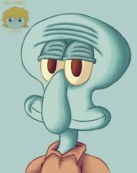

Bob esponja
Este tío tiene lore, es un cnidario con pulmones, dientes y extremidades con la capacidad de razonamiento de un mamífero

Calamardo
Menudo amargado, aparte es que toca el clarinete jjajajajja que pringao
Gary
Menudo pedazo de máquina, todavia me acuerdo del episodio de las carreras de caracoles con el casco y echando mucosa de sodio que reacciona con el agua y prende

Patricio Estrella
Sin duda, el GOAT, pero no de la serie. Seguramente de la historia de la animación. Carcajada limpia, un diente (opcional) y déficit de atención crean el mejor cóctel de todos